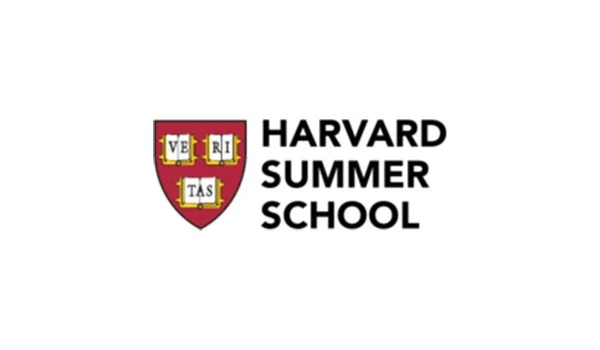
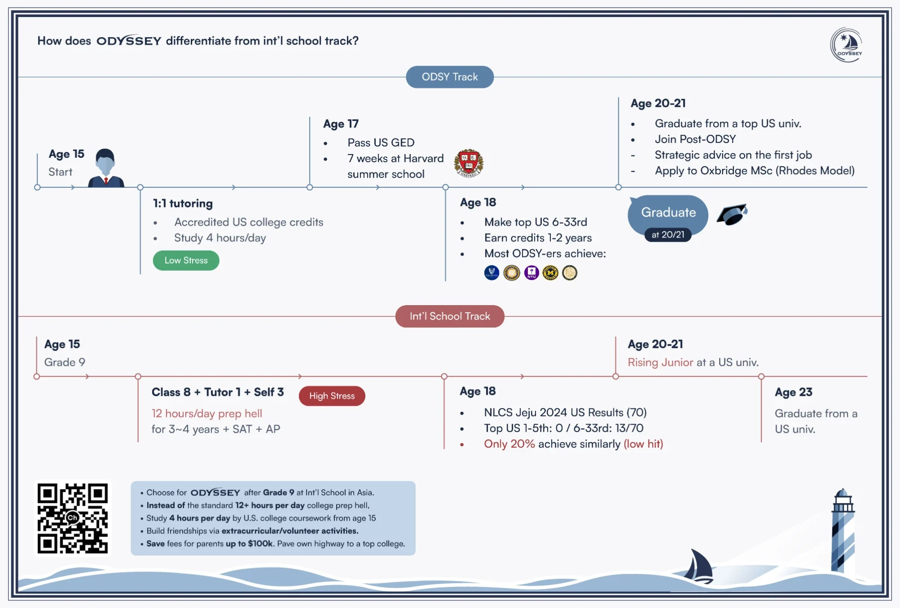

Consultation & Assessment
Before the journey beginsParents and student meet the Odyssey team privately. We review the student's current school and curriculum, academic record, ambitions and timeline, then shape a pathway around them.

Odyssey welcomes high-achieving teens who are ready to move faster, and students who are struggling in a traditional international-school setting. Both are given the same thing: a personal plan, a pace that fits, and a clear path to a top university.
Parents and student meet the Odyssey team privately. We review the student's current school and curriculum, academic record, ambitions and timeline, then shape a pathway around them.
Students take university-level courses online and earn U.S. college credits. Each credit is evidence of readiness for university study, and each can shorten the degree that follows.
Study takes place four hours a day at The Great Room, guided by mentors and supported by AI-assisted learning between sessions.
Students spend seven weeks at Harvard Summer School, studying alongside university students and adding a respected academic record to their profile. Around seventeen, they also pass the U.S. GED.
With credits completed and a strong profile in hand, students apply to enter leading U.S. universities, among them UC Berkeley, NYU, Johns Hopkins, Michigan and UC San Diego, as transfer juniors. No SAT is required for this pathway.
Bespoke, high-impact mentorship from a team of experts of professional calibre, not unproven college students.
MIT, Harvard, Yale, Princeton, Stanford, the Ivies and Oxbridge
Polaris · Ages 14+
Discover PolarisRather than chasing a 10% chance, aim for a far likelier outcome, and arrive faster than anyone in your school. Odyssey reports a 75 to 100% success rate on this track.†
UC Berkeley, UCLA, UC San Diego, NYU
Odyssey · Ages 14 to 16
Arrange a consultationIn Grade 11 or 12 and short on time? Odyssey has a route built for your clock.
Top 30 U.S. universities, including UC Irvine, Boston College and Tufts
Odyssey · Ages 17 to 18
Arrange a consultation
A strategic summer to strengthen the academic profile and university applications.
†As reported by Odyssey from its students to date. Admission is never guaranteed.

| Aspect | Traditional route | The Odyssey route |
|---|---|---|
| The daily rhythm | Full school days, followed by long hours of exam preparation | Four focused hours of university-level study a day |
| The timeline | High school to 18, then a four-year degree | Two to three years at the student's own pace, aiming to enter university as a junior |
| Standardised testing | SAT or ACT usually expected for first-year entry | No SAT required for the transfer pathway |
| Proof of readiness | Grades and predicted scores | U.S. college credits and selective summer study |
| The investment | International school fees plus four years of university tuition | Potential savings of up to US$100,000 across the journey* |
*Depends on the school, university and pathway chosen.
Odyssey is designed for students aged 14 and over. The pathway works best when a student begins around fifteen, leaving two to three years to complete it at their own pace.
Students study at The Great Room in Gaysorn Tower, Bangkok. Remote access means study can continue when the family travels.
No SAT is required for the transfer pathway Odyssey prepares students for. Each university sets its own requirements, and we review them with every family.
No programme can guarantee admission. What Odyssey offers is a structured, proven pathway, personal mentorship, and an honest assessment of each student's options at every stage.
Every pathway is personal, so fees are shared during a private consultation. Many families find the total journey costs less than international school followed by a full four-year degree.